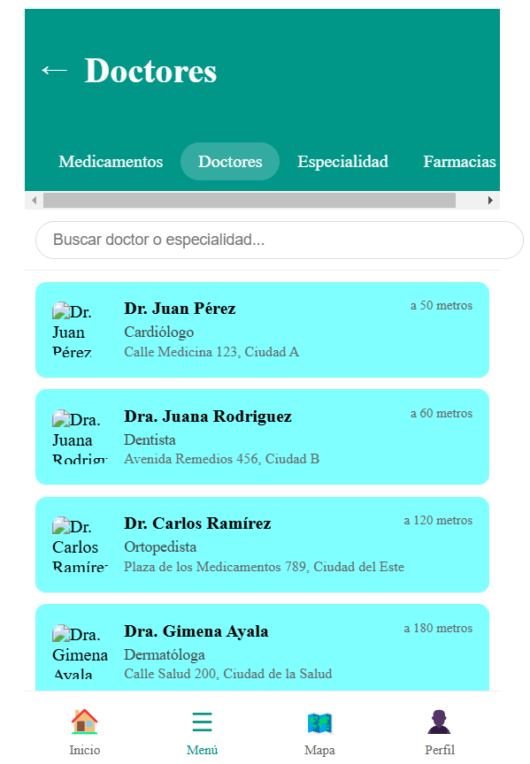
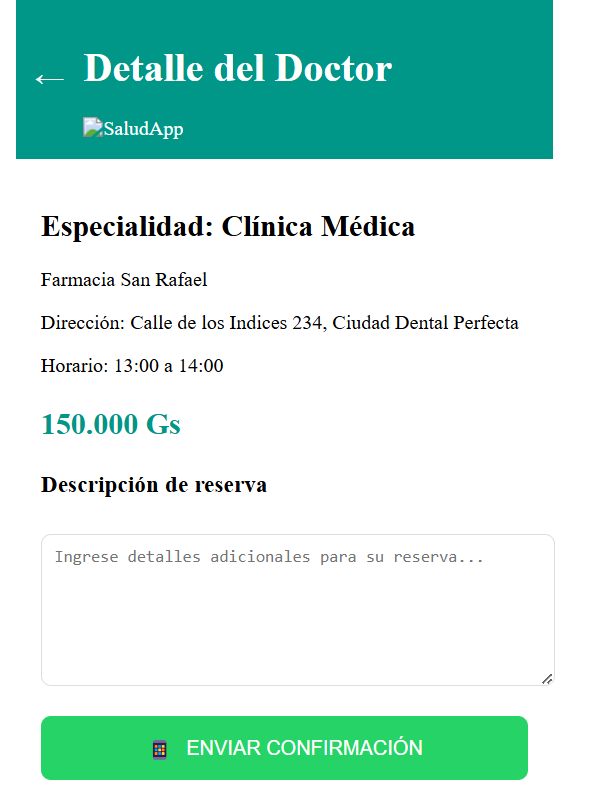
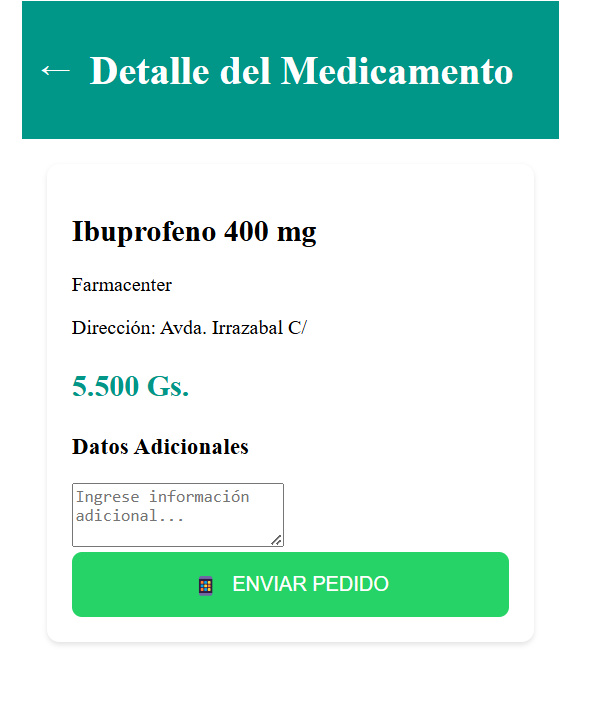
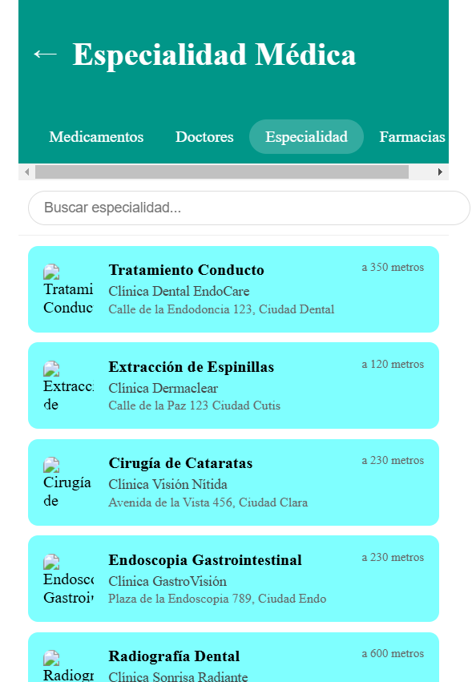
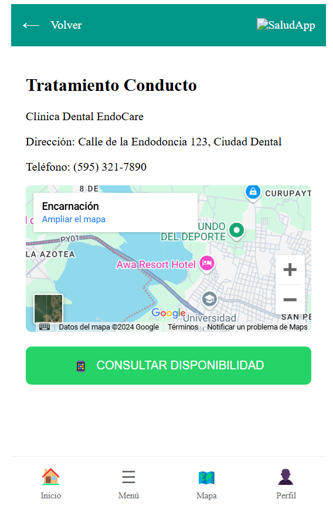

Análisis detallado de la experiencia de usuario y resultados de las pruebas
La Salud App es una aplicación destinada a mejorar el acceso a servicios de salud y medicamentos en comunidades locales. Ofrece información detallada sobre proveedores de salud, clínicas y disponibilidad de medicamentos, simplificando la coordinación de la atención médica para reducir retrasos en el tratamiento y mejorar la experiencia del paciente.
Vemos esta idea como una herramienta que puede apoyar o proporcionar acceso fácil y rápido a información y servicios de salud.
Utilizamos MAZE, ya que el enfoque está en la experiencia del usuario y se requiere un análisis detallado del comportamiento de los usuarios en un prototipo o sitio web. MAZE fue nuestra opción adecuada. Su capacidad para realizar pruebas de usabilidad con usuarios reales, ofreciendo métricas precisas sobre la navegación, el tiempo de interacción y los patrones de comportamiento, fue beneficioso para obtener información valiosa sobre la experiencia del usuario.
participantes
 " Me gusta la eficacia de la velocidad con la que puedo solicitar un turno a través de una búsqueda en donde me muestra muchas opciones" - Steffani Vanni (Solicitó una consulta en Clínica Médica)
"Suelo comprar medicamentos en cantidades para llevarlos a pacientes del Interior y normalmente no se si las farmacias cuentan con dicho medicamento, por ende esta aplicación en la parte de búsqueda con mapa me pareció muy eficaz para verificar en que lugares puedo encontrar los medicamentos que necesito comprar" - Mabel Servian - Médica Clínica-Familiar
 "Considero útil la forma en la que puedo ver en dónde puedo acceder a servicios médicos, como en este caso acceder a un Odontólogo buscando específicamente lo que necesito" - Eliane Ramirez - Paciente
La mayoría de los participantes encontraron la búsqueda y programación de citas médicas rápidas y eficientes.
La necesidad de acceder a medicamentos en ubicaciones cercanas fue mencionada por varios participantes.
Todos los participantes expresaron la importancia de acceder a información detallada sobre los servicios de salud.
La mayoría de los participantes encontraron la búsqueda y programación de citas médicas rápidas y eficientes.
La necesidad de acceder a medicamentos en ubicaciones cercanas fue mencionada por varios participantes.
Todos los participantes expresaron la importancia de acceder a información detallada sobre los servicios de salud.
Enlaces importantes: